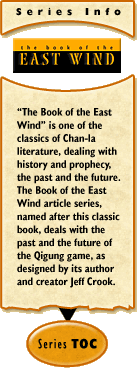

The Regions of the Empire
by Jeff Crook
January 22, 2001
Although the first stage for Qigung:The Ring of Fire, and its first grand theatre will take place in the ruins of the imperial city of Kangdao, the characters may be drawn from virtually any area in the empire. The city of Kangdao was the capital and the people living there represented every variety of culture and race. To that end, a little background information about each of the provinces is important in creating any character's history.
The descriptions of the provinces detailed below are drawn directly from the last updated version of the Book of the East Wind, reflecting life as it existed just prior to the cataclysm. This could prove useful in navigating the darkness of the new world.
Tien Shan:
The eastern-most province, this is an area of hills, volcanic mountains, and (to the east) wind-swept steppes. It is bordered on the west by the Wa River and the provinces of Hwonuar and Kangdao, to the south by desert, while to the north and east spread vast wind-swept steppes and forested hills, home of barbarian tribes. The ancient Eastern Wall, now in ruins, divides the province from barbarian lands. The Feng River, near the eastern frontier, is the birthplace of Li Chan. In the center of the province stands volcanic Mount Tien, home to several temples and monasteries, as well as the rumored lair of several titans.
Tien Shan is the largest of all the provinces, but it has no major cities, only fortresses. The province is ruled by a Fong general from the largest of these fortresses - Ryang Dao. The Chan who live here are mostly fishermen plying the waters of the Wa River, or foresters and miners. They are the tallest of all the Chan, and the most powerfully built. The predominant hairstyle is a single long braid worn down the back. The men often wear beards. Clothing is of dark wool and fur vests, laced boots, and heavy fur hats. Diet is simple and based on fish, mutton, and wheat-products, while the provincial drink is beer.
Hwonuar:
Lying between the arms of the Wa River headwaters, this province takes its appellation from the river's ancient name. To the northeast, it is a region of rough hills, but to the southwest, in the valley of the two rivers, there is a valuable wheat-growing region. The province is bordered on the east by Tien Shan, to the west and south by Kangdao, while to the north spread snowy wastelands. One little-used road runs between this province and Diengao to the northwest. Hwonuar is one of the smallest provinces, and the one province where the Fong are not a minority. There are no major cities in Hwonuar. It is ruled by a Fong general. The Chan here are much like their Tien Shan neighbors, except that they prefer to color their fur vests red, and they are mostly farmers. As in all regions, the Fong never plow the soil - they are herders of animals, and in this region as well as in Tien Shan, their herds consist mainly of horses and sheep.
Kangdao:
The center of Fong-controlled Chan-la, this province is the second-largest of the empire. It is the home of the capital city Kangdao, which was first a fortress of the Xao, then a castle of the Kang. The city lies at the juncture of two major rivers - the Wa River, and its largest tributary, the Eno River, while a little-used road runs north to Diengao. Kangdao is Chan-la's largest city, but there are no other major cities in Kangdao province. The land, other than a region of forest in the southeast part of the province, is mostly farmland. For this reason, it is one of the wealthiest provinces in the empire, and has been, for many thousands of years, the target of barbarian raiders from the north, east, and south. Though the emperor's Phoenix Throne is located here, the province itself is ruled by the most powerful and revered Fong general of the empire. The Chan here are mostly farmers and craftsmen. They dress in black woolen shirts and trousers, with laced boots, and their hair is worn in a single long braid which is usually wrapped around the head like a turban, or around the neck like a scarf. Food preferences are for mutton, and wheat products like noodles.
Shiquan:
Bordered to the south by the Tong Mountains rising majestically to the heavens, and the two sacred lakes - Lake Kubao and Lake Hon, to the west by the Wei Hills, to the north the Dien Forest, to the east by Kangdao, this province lies at the spiritual, cultural, and geographical center of Chan-la. Here for two thousand years the monastery of Lohan has looked out from the foothills of the Tong Mountains across the rich Wa River valley, here for thousands of years pilgrims have gathered to bathe in the sacred lakes or climb to the mountain temples of the Eight Emperors of Heaven. Here also Shidao, the ancient capital city of Chan-la, lies in ruins, half-flooded by the Wa, the result of a devastating earthquake five hundred years ago. There are no major cities in Shiquan; it is a province of villages, temples, and elaborate mansions belonging to the empire's wealthiest families. Shiquan was recently ruled by a Chan prelate, until his assassination at the hands of Chan rebels led to the installment of a Fong general. The Chan here wear their hair long, though not as long as their eastern neighbors, but they disdain braids or any other hair binding. They wear similar clothing styles as in Kangdao, though they prefer to dye their woolen garments green. Diet incorporates rice, wheat, and beans, as well as mutton, beef, pork, seafood, and poultry.
Huwai:
This is the most 'metropolitan' of all the provinces, for it is a crossroads of trade. Moderately-safe roads run north to the bordering provinces of Dienpo and Dienso, and south to Shangxao, while merchants from the eastern provinces and from the coastal province of Wapo ply the Wa River. Huwai is rice country, second only to Shangxao in total rice production. The province is governed by a Chan prelate from the regional capital of Chien. The other major cities of Huwai are Shinzing, Nan, and Bonjun. Most Chan are farmers, craftsmen, or merchants. The average Chan from Huwai dresses in a white shirt with black or green trousers, and slippers on the feet instead of boots, when any shoes are worn at all. They wear a small round cap on the head, usually of black but sometimes white cotton or silk, and the hair is worn rather short by both males and females. Diet is similar to that of Shiquan, except more rice is eaten than wheat products. The drink is rice wine.
Wapo:
Situated at the mouth of the Wa River, this province consists of an almost unbroken terrain of rice paddies, the only other topographical feature being the enormous mangrove swamps where the Wa meets the sea. This situation would make it the leader in rice production were it not also the smallest province in Chan-la. Although it is bordered on the west by the sea, there are no good ports in Wapo; the first major port along the Wa River is the city of Chien, in Huwai province, and it is to this place that much of Wapo's wealth flows. Wapo is the poorest province in the empire. To the north and south stretch endless miles of pirate- and monster-infested swamps.
The province is ruled by a Xao governor from the regional capital of Emshi, a city where the streets are canals. It is connected to the Wa by a maze of channels and small lakes. The Chan and Xao of Wapo dress mostly in white cotton garments, similar in style to that of Huwai and Shiquan, while the provincial headgear is a wide, flat, dish-shaped hat woven from reeds. The people wear sandals made from the same material. The poor people of Wapo eat very little meat; their diet consists mostly of rice and water plants, with some fish and poultry. The cuisine is very spicy, second only to Shangxao in heat.
Diengao:
This northern province is the most isolated of the provinces of Chan-la. It stands alone, surrounded on three sides by wilderness, mountains, and forests, while to the north spreads Lake Yui, the source of Diengao's wealth. Here swim the prized tenwe fish, from whose oils is made all manner of valuable products, from oil for flavoring, cooking and light, to perfumes, incense and medicinal salves. Most of Diengao's people are fishermen, plying the waters of Lake Yui and the upper Dien River, though a few mine the surrounding mountains for jade, gold, and silver. Some make a living collecting amber from the beaches of Lake Yui. The region is ruled by a Chan prelate. There are no major cities. The people here are hardy and stoic, for they often come under attack by the fierce northern barbarians. Many are of Han descent. The region is cold and rugged, so the people dress in furs, the most common being otter skin, with heavy otter skin boots on the feet. The hair is worn long and unkempt, with shapeless caps of fur on the head. Grooming is not one of the Diengao priorities. The national delicacy is raw shellfish from the lake, though they also keep cattle. They eat almost no vegetables or grain products. The drink is haite, a volatile beverage distilled from an inedible root peculiar to the region.
Dienso:
This is the least-populous province of Chan-la, though it is not the smallest. However, the region is almost entirely mountainous. Most of Chan-la's mineral wealth comes from Dienso, for here is mined the coal and iron needed to make weapons of steel, as well as sulfur for gunpowder. Though it is ruled by an iron-handed Fong general from the regional capital of Lidao, the province is divided up into ancient fiefdoms governed by rival Chan families. It is bordered on the north by the Dien River, to the west by Dienpo and Huwai, and to the east by the vast and mysterious Dien Forest. The most common clothing here is leather armor and an iron helm, and almost everyone goes about armed. Food consists of bean products and beef, often quite spicy. The drink is rice wine from Huwai.
Dienpo:
This western province includes the mouth of the Dien River, where Xashi and Ji, Dienpo's largest cities, are located. The people of western Dienpo are fishermen and sailors; their ships travel to the mysterious barbarian lands across the seas, bringing back all manner of strange and mysterious treasures, while their fishermen harvest the much-treasured abalone from the northern sea's cold waters. In eastern Dienpo, they grow both mung beans, which are used to make noodles and other staples, and soy beans, from which is produced the staple seasoning for much of the cuisine of Chan-la. Many of the other staple seasonings such as garlic, leeks, and onions are also grown here. Dienpo is ruled by a Fong general. The people dress simply, in white and blue woolen shirts and trousers, and they wear wooden togs or sandals. Hair is worn short. The diet consists of seafood, bean products, and especially pork. The drink is beer.
Shangxao:
The southernmost province of Chan-la, Shangxao is also the most ancient and one of the wealthiest. Though ruled by a Xao governor and long associated with the Xao people, the Xao are a minority here, except in the major cities - Di Lap Po, Ng, and Gozun Sai. The Shang River runs its entire course through this province. It emerges fully-grown from a sacred cave in the Tong Mountains, around which is built the holy city of Gozun Sai. From its source to the sea, the river runs reddish-brown, and legend says that the cave at Gozun Sai is the womb of Indramahatra, the earth goddess.
Shangxao is the largest producer of rice in Chan-la; its farms feed half the empire, but this is not the only source of the region's wealth. The Shang River is rich with gold, and the waters off the coast produce pearl oysters. From the southern jungles comes ivory, rhinoceros horn, and other prized substances, while upon Shangxao looms is woven the finest silk. Here also is the empire's source of ginger, a root used in both cooking and beer. Shangxao, because of its ancient heritage, is widely considered the most decadent province in the empire. Here is the source of Xao magic and lotus dust, here demons are worshipped in nighted temples or roam the dark streets free to slay at will. The Chan of Shangxao wear colorful silken robes (sometimes sleeveless) of red or blue, and short trousers of black. The men shave their heads, while the women almost never cut their hair, often sporting tresses which reach to their ankles. Few people wear shoes, and those who do prefer wooden sandals. The regional headgear is a broad conical hat woven of reeds. The average Chan from Shangxao runs about forty pounds heavier than his northern counterparts, though he isn't any taller. Rice is eaten in huge quantities, as well as all manner of vegetables, with meat preferences being duck, pork, and fish. The food is very spicy, quite beyond the tolerance of most visitors from other provinces. The drink is rice wine.
Chandao:
A hundred miles off the western coast of Chan-la lies the mountainous island of Chandao, where the Wu Emperor, his relatives and loyal followers live in exile, plotting their return to power. Sometimes they visit their homeland, but always in secret. All of the people of Chandao are descendants of inhabitants of the mainland provinces, and for the most part they retain their provincial ways, so it is usually quite easy for them to slip back into Chan society.